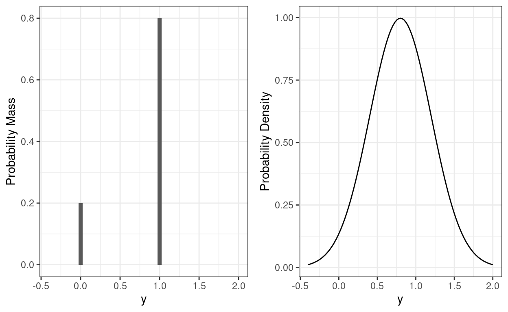

\[ \newcommand{\bv}[1]{\boldsymbol{\mathbf{#1}}} \]
Click here to download the Rmd file: week12-logistic.Rmd
# To install a package, run the following ONCE (and only once on your computer)
# install.packages("psych")
library(here) # makes reading data more consistent
library(tidyverse) # for data manipulation and plotting
library(haven) # for importing SPSS/SAS/Stata data
library(glmmTMB) # for multilevel logistic models
library(lme4) # also for multilevel logistic models
library(sjPlot) # for plotting
library(MuMIn) # for R^2
library(modelsummary) # for making tables
theme_set(theme_bw()) # Theme; just my personal preference
In this week, well talk about logistic regression for binary data. Well use the same HSB data that you have seen before, but with a dichotomous variable created. In practice it is generally a bad idea to arbitrarily dichotomize a binary variable, as it may represent a substantial loss of information; its done here just for pedagogical purpose.
Here we consider those who score 20 or above for a commended status.
# Read in the data (pay attention to the directory)
hsball <- read_sav(here("data_files", "hsball.sav"))
# Dichotomize mathach
hsball <- hsball %>%
mutate(mathcom = as.integer(mathach >= 20))
Lets plot the commended distribution for a few schools
set.seed(7351)
# Randomly select some schools
random_schools <- sample(hsball$id, size = 9)
hsball %>%
filter(id %in% random_schools) %>%
mutate(mathcom = factor(mathcom,
labels = c("not commended", "commended"))) %>%
ggplot(aes(x = mathcom)) +
geom_bar() +
facet_wrap( ~ id, ncol = 3) +
coord_flip()
Lets use our linear model, and then talk about the problems. Consider first meanses as predictor.
># Family: gaussian ( identity )
># Formula: mathcom ~ meanses + (1 | id)
># Data: hsball
>#
># AIC BIC logLik deviance df.resid
># 6266.7 6294.2 -3129.3 6258.7 7183
>#
># Random effects:
>#
># Conditional model:
># Groups Name Variance Std.Dev.
># id (Intercept) 0.005148 0.07175
># Residual 0.136664 0.36968
># Number of obs: 7185, groups: id, 160
>#
># Dispersion estimate for gaussian family (sigma^2): 0.137
>#
># Conditional model:
># Estimate Std. Error z value Pr(>|z|)
># (Intercept) 0.178404 0.007222 24.70 <2e-16 ***
># meanses 0.178190 0.017483 10.19 <2e-16 ***
># ---
># Signif. codes: 0 '***' 0.001 '**' 0.01 '*' 0.05 '.' 0.1 ' ' 1So it runs, and it indicates a positive association between meanses and mathcom. Lets plot the effect:
plot_model(m_lme,
type = "pred", terms = "meanses",
show.data = TRUE, jitter = 0.02,
title = "", dot.size = 0.5
)
Well, this looks a bit strange. The outcome can only take two values, but the predictions are in decimals. We can assume may be we are predicting the probability of being commended for each student, but still there are some negative predictions that are not possible. For example, if we consider a school with meanses = -2, our prediction would be
predict(m_lme, newdata = data.frame(meanses = -2, id = NA), re.form = NA)
># [1] -0.1742227Another problem is that the data is not normally distributed. We can look at the distribution of the data (in a histogram) and of simulated data based on the model (in lighter lines) below:
# Simulate a data set based on the linear model
sim_y <- simulate(m_lme)
ggplot(hsball, aes(x = mathcom)) +
geom_histogram(aes(y = ..density..)) +
geom_density(aes(x = sim_y[, 1]), alpha = 0.5)
Another related and subtle problem is that the residual variance is not constant across levels of the predictor. For example, the residual variance for meanses \(\leq\) -0.5 is
broom.mixed::augment(m_lme) %>%
filter(meanses <= -.5) %>%
# residual variance
summarize(`var(e | meanses <= .5)` = var(.resid))
># # A tibble: 1 1
># `var(e | meanses <= .5)`
># <dbl>
># 1 0.0582But when `meanses > 0.5 it was
broom.mixed::augment(m_lme) %>%
filter(meanses > -.5) %>%
# residual variance
summarize(`var(e | meanses > .5)` = var(.resid))
># # A tibble: 1 1
># `var(e | meanses > .5)`
># <dbl>
># 1 0.145These are pretty large differences, and it happens every time one uses a normal linear model for a binary outcome. The textbook (section 17.1) has more discussion on this.
So because of these limitations, we generally prefer models designed for binary outcomes, the most popular one is commonly referred to as a logistic model.
The logistic model modifies the linear multilevel model in two ways.
First, it replaces the assumption that the conditional distribution of the outcome is normal with one that says the outcome follows a Bernoulli distribution, which is a distribution for binary variables (e.g., outcome of a coin flip). Below is a comparison of a Bernoulli distribution (left) with mean = 0.8 (i.e., 80% success and 20% failure), which by definition has a standard deviation of 0.4, and a normal distribution (right) with a mean = 0.8 and a standard deviation of 0.4:
p1 <- ggplot(tibble(y = c(0, 1), p = c(0.2, 0.8)), aes(x = y, y = p)) +
geom_col(width = 0.05) +
xlim(-0.4, 2) +
labs(y = "Probability Mass")
p2 <- ggplot(tibble(y = c(0, 1)), aes(x = y)) +
stat_function(fun = dnorm, args = list(mean = 0.8, sd = 0.4)) +
xlim(-0.4, 2) +
labs(y = "Probability Density")
gridExtra::grid.arrange(p1, p2, ncol = 2)

With the Bernoulli distribution, the possible values are only 0 and 1, so it matches the outcome.
Second, instead of directly modeling the mean of a binary outcome (i.e., probability), which is bounded between 0 and 1, a logistic model transforms the mean of the outcome into something that is unbounded (i.e., with range between \(-\infty\) and \(\infty\)). We can this \(\eta\). One common transformation that would do this is the logit transformation, which converts a probability into odds, and then to log odds: \[\text{Log Odds} = \log \left(\frac{\text{Probability}}{1 - \text{Probability}}\right)\]
As shown below,
For example, when the probability is 0.5, the log odds = 0; when the probability = 0.9, the log odds = 0.7109495; when the probability = -0.9, the log odds = 0.2890505.
To understand the equation for a logistic model, it helps to write the normal linear model in its full form by specifying the distributions. Lets look at the simplest unconditional model without predictors. First, we can write \[\text{mathcom}_{ij} = \mu_{ij} + e_{ij}, \quad e_{ij} \sim N(0, \sigma), \] where \(\mu_{ij}\) is the predicted value of mathcom for the \(i\)th individual in the \(j\)th school. This is equivalent to saying \[\text{mathcom}_{ij} \sim N(\mu_{ij}, \sigma),\] because if a variable is normal with a mean 0, adding a value to it changes its mean, but it will still be normal. This says mathcom is normally distributed around the predicted value with an error variance of \(\sigma\). The predicted value is separated into level 1 \[
\begin{aligned}
\text{mathcom}_{ij} & \sim N(\mu_{ij}, \sigma) \\
\mu_{ij} & = \beta_{0j}
\end{aligned}
\] and level 2 \[\beta_{0j} = \gamma_{00} + u_{0j}\] You can convince yourself that this is the same model youve seen in Week 3.
Now, well change the distribution of mathcom, and transform \(\mu_{ij}\) from probability to log odds:
Level 1 \[ \begin{aligned} \text{mathcom}_{ij} & \sim \text{Bernoulli}(\mu_{ij}) \\ \eta_{ij} & = \text{logit}(\mu_{ij}) \\ \eta_{ij} & = \beta_{0j} \end{aligned} \] Level 2 \[\beta_{0j} = \gamma_{00} + u_{0j}\] The level-2 equation has not changed, but the meaning of \(\beta_{0j}\) is different now: it is the cluster mean of cluster \(j\) in the log odds unit.
glmmTMBWith logistic regression, frequentist methods rely on approximations. Sometimes they may be problematic, so attention needs to be paid to assess convergence. Compared to linear models, the only thing you need to change is to specify family = binomial("logit")
# Note: Maximum likelihood estimation with logistic models is
# more challenging, as the likelihood functions involve integrations
# that are difficult to solve. Different software/packages may use
# different algorithms to solve that, and they have different degrees
# of accuracy.
# glmmTMB syntax (with Laplace approximation and REML)
m0_logit <- glmmTMB(mathcom ~ (1 | id),
data = hsball,
family = binomial("logit"),
REML = TRUE)
summary(m0_logit)
># Family: binomial ( logit )
># Formula: mathcom ~ (1 | id)
># Data: hsball
>#
># AIC BIC logLik deviance df.resid
># 6489.2 6502.9 -3242.6 6485.2 7184
>#
># Random effects:
>#
># Conditional model:
># Groups Name Variance Std.Dev.
># id (Intercept) 0.5617 0.7495
># Number of obs: 7185, groups: id, 160
>#
># Conditional model:
># Estimate Std. Error z value Pr(>|z|)
># (Intercept) -1.64452 0.06938 -23.7 <2e-16 ***
># ---
># Signif. codes: 0 '***' 0.001 '**' 0.01 '*' 0.05 '.' 0.1 ' ' 1confint(m0_logit) # confidence intervals
># 2.5 % 97.5 % Estimate
># cond.(Intercept) -1.7805004 -1.5085474 -1.644524
># id.cond.Std.Dev.(Intercept) 0.6378116 0.8807276 0.749492# lme4 syntax (with Laplace approximation and ML)
m0_logit_lme4 <- glmer(mathcom ~ (1 | id),
data = hsball,
family = binomial("logit"))
# lme4 syntax (with adaptive quadrature and ML; more accurate
# but only works for models without random slopes)
m0_logit_ghq <- glmer(mathcom ~ (1 | id),
data = hsball,
family = binomial("logit"),
nAGQ = 15)
By definition, \(\sigma\) is fixed to be \(\pi^2 / 3\) in the log-odds unit in a logistic model. Therefore, the ICC is
vc_m0 <- VarCorr(m0_logit)
(icc_m0 <- vc_m0[[1]]$id[1, 1] /
(vc_m0[[1]]$id[1, 1] + pi^2 / 3))
># [1] 0.1458452Lv-1:
\[ \begin{aligned} \text{mathcom}_{ij} & \sim \text{Bernoulli}(\mu_{ij}) \\ \eta_{ij} & = \text{logit}(\mu_{ij}) \\ \eta_{ij} & = \beta_{0j} + \beta_{1j} \text{ses_cmc}_{ij} \end{aligned} \]
Lv-2:
\[ \begin{aligned} \beta_{0j} & = \gamma_{00} + \gamma_{01} \text{meanses}_j + u_{0j} \\ \beta_{1j} & = \gamma_{10} + u_{1j} \\ \begin{bmatrix} u_{0j} \\ u_{1j} \end{bmatrix} & \sim N\left( \begin{bmatrix} 0 \\ 0 \end{bmatrix}, \begin{bmatrix} \tau^2_0 & \\ \tau_{01} & \tau^2_{1} \end{bmatrix} \right) \end{aligned} \]
m1_logit <- glmmTMB(
mathcom ~ meanses + ses_cmc + (ses_cmc | id),
data = hsball,
family = binomial("logit"),
REML = TRUE
)
# There is a singular convergence warning. Same issue with lme4,
# but the likelihood values seem fine with different optimizers.
summary(m1_logit)
># Family: binomial ( logit )
># Formula: mathcom ~ meanses + ses_cmc + (ses_cmc | id)
># Data: hsball
>#
># AIC BIC logLik deviance df.resid
># 6279.6 6320.9 -3133.8 6267.6 7182
>#
># Random effects:
>#
># Conditional model:
># Groups Name Variance Std.Dev. Corr
># id (Intercept) 0.27177 0.5213
># ses_cmc 0.01217 0.1103 -1.00
># Number of obs: 7185, groups: id, 160
>#
># Conditional model:
># Estimate Std. Error z value Pr(>|z|)
># (Intercept) -1.71979 0.05598 -30.72 <2e-16 ***
># meanses 1.40117 0.13502 10.38 <2e-16 ***
># ses_cmc 0.58491 0.05338 10.96 <2e-16 ***
># ---
># Signif. codes: 0 '***' 0.001 '**' 0.01 '*' 0.05 '.' 0.1 ' ' 1Plotting is especially important with transformation, as it shows the association in probability unit
m1_plots <- plot_model(m1_logit,
type = "pred",
show.data = TRUE, jitter = 0.02,
title = "", dot.size = 0.5
)
gridExtra::grid.arrange(grobs = m1_plots, ncol = 2)
For a student with ses = 0 in a school with meanses = 0, the predicted log odds of being commended was -1.72, 95% CI [-1.83, -1.61].
A unit increase in meanses is associated with an increase in log odds of 1.4, 95% CI [1.14, 1.67].
Within a given school, a unit increase in student-level ses is associated with an increase in log odds of 0.585, 95% CI [0.48, 0.69].
A unit increase in meanses is associated with the odds of being commended multiplied by 4.06, 95% CI [3.12, 5.29].
Within a given school, a unit increase in ses is associated with the odds of being commended multiplied by 1.79, 95% CI [1.62, 1.99].
# meanses = 0; ses_cmc = -0.5 vs 0.5
pred_df1 <- expand_grid(meanses = 0,
ses_cmc = c(-0.5, 0.5),
id = NA)
cbind(pred_df1,
.pred = predict(m1_logit, newdata = pred_df1,
re.form = NA, type = "response"))
># meanses ses_cmc id .pred
># 1 0 -0.5 NA 0.1256863
># 2 0 0.5 NA 0.1994345# meanses = -0.5 vs 0.5; ses_cmc = 0
pred_df2 <- expand_grid(meanses = c(-0.5, 0.5),
ses_cmc = 0,
id = NA)
cbind(pred_df2,
.pred = predict(m1_logit, newdata = pred_df2,
re.form = NA, type = "response"))
># meanses ses_cmc id .pred
># 1 -0.5 0 NA 0.08833867
># 2 0.5 0 NA 0.26984842As shown above, a difference of 1 unit in ses_cmc from -0.5 to 0.5 corresponded to a difference in probability of being commended by about 7%, when meanses = 0.
On the other hand, a difference of 1 unit in meanses from -0.5 to 0.5 corresponded to a difference in probability of being commended by about 18%, when ses_cmc = 0.
r.squaredGLMM(m1_logit)
># R2m R2c
># theoretical 0.11970981 0.18809030
># delta 0.06152991 0.09667695There are two versions of R^2 being reported. The theoretical one refers to the R^2 by assuming that the binary outcome originally comes from a continuous underlying distribution, and so maybe appropriate here. The delta one looks at the variance of the binary outcome directly, so is appropriate for outcomes that truly can only take two values. In practice either one can be used. See https://royalsocietypublishing.org/doi/pdf/10.1098/rsif.2017.0213 and https://stats.idre.ucla.edu/other/mult-pkg/faq/general/faq-what-are-pseudo-r-squareds/ for more discussions.
One challenge with glmmTMB and lme4 is that the estimation may not be accurate for generalized linear mixed-effect models (GLMMs), especially in the prescence of random slopes. We saw convergence issues in our previous model. A better approach is to use Bayesian estimation. A good practice is to compare the results from glmmTMB/lme4::glmer() to ones with Bayesian estimation. If there is a large discrepancy, the Bayesian result is likely more accurate, especially in small samples
summary(m1_logit_brm)
># Family: bernoulli
># Links: mu = logit
># Formula: mathcom ~ meanses + ses_cmc + (ses_cmc | id)
># Data: hsball (Number of observations: 7185)
># Draws: 4 chains, each with iter = 2000; warmup = 1000; thin = 1;
># total post-warmup draws = 4000
>#
># Group-Level Effects:
># ~id (Number of levels: 160)
># Estimate Est.Error l-95% CI u-95% CI Rhat
># sd(Intercept) 0.52 0.05 0.42 0.64 1.00
># sd(ses_cmc) 0.11 0.07 0.01 0.26 1.01
># cor(Intercept,ses_cmc) -0.48 0.44 -0.98 0.72 1.00
># Bulk_ESS Tail_ESS
># sd(Intercept) 1219 2226
># sd(ses_cmc) 1164 1319
># cor(Intercept,ses_cmc) 2235 2064
>#
># Population-Level Effects:
># Estimate Est.Error l-95% CI u-95% CI Rhat Bulk_ESS Tail_ESS
># Intercept -1.76 0.06 -1.87 -1.65 1.00 1841 2199
># meanses 1.45 0.14 1.19 1.73 1.00 1801 2381
># ses_cmc 0.59 0.06 0.48 0.71 1.00 3792 2775
>#
># Draws were sampled using sampling(NUTS). For each parameter, Bulk_ESS
># and Tail_ESS are effective sample size measures, and Rhat is the potential
># scale reduction factor on split chains (at convergence, Rhat = 1).| M0 | M1 (Laplace) | M1 (MCMC) | |
|---|---|---|---|
| (Intercept) | 1.645 | 1.720 | 1.757 |
| (0.069) | (0.056) | (0.056) | |
| sd__(Intercept) | 0.749 | 0.521 | 0.523 |
| (0.054) | |||
| meanses | 1.401 | 1.455 | |
| (0.135) | (0.139) | ||
| ses_cmc | 0.585 | 0.594 | |
| (0.053) | (0.057) | ||
| sd__ses_cmc | 0.110 | 0.110 | |
| (0.070) | |||
| cor__(Intercept).ses_cmc | 1.000 | 0.482 | |
| (0.438) | |||
| Num.Obs. | 7185 | ||
| AIC | 6489.2 | 6279.6 | |
| BIC | 6502.9 | 6320.9 | |
| Log.Lik. | 3242.585 | 3133.797 | |
| algorithm | sampling | ||
| pss | 4000.000 |
In MLM, we need to distinguish two types of interpretations of coefficients:
In a linear model, the coefficients under CS and under PA are the same, so we did not pay too much attention to the distinction. However, in generalized linear models, such as logistic models, with the same data, one gets different coefficients by fitting a conditional (e.g., MLM) vs.a marginal model (e.g., GEE). I have some discussions at https://quantscience.rbind.io/2020/12/28/unit-specific-vs-population-average-models/. You may also check out an example in this paper: https://journals.sagepub.com/doi/full/10.3102/10769986211017480
The GLMMadaptive package computes coefficients in both CS and PA. Below is an example showing the difference:
library(GLMMadaptive)
m1_pa <- mixed_model(mathcom ~ meanses + ses_cmc,
random = ~ ses_cmc | id,
data = hsball,
family = binomial("logit"))
# Unit-specific
summary(m1_pa)
>#
># Call:
># mixed_model(fixed = mathcom ~ meanses + ses_cmc, random = ~ses_cmc |
># id, data = hsball, family = binomial("logit"))
>#
># Data Descriptives:
># Number of Observations: 7185
># Number of Groups: 160
>#
># Model:
># family: binomial
># link: logit
>#
># Fit statistics:
># log.Lik AIC BIC
># -3128.23 6268.46 6286.911
>#
># Random effects covariance matrix:
># StdDev Corr
># (Intercept) 0.5180
># ses_cmc 0.1174 -0.9369
>#
># Fixed effects:
># Estimate Std.Err z-value p-value
># (Intercept) -1.7584 0.0570 -30.8705 < 1e-04
># meanses 1.4370 0.1357 10.5920 < 1e-04
># ses_cmc 0.6057 0.0560 10.8093 < 1e-04
>#
># Integration:
># method: adaptive Gauss-Hermite quadrature rule
># quadrature points: 11
>#
># Optimization:
># method: hybrid EM and quasi-Newton
># converged: TRUE# Population-average
marginal_coefs(m1_pa, std_errors = TRUE)
># Estimate Std.Err z-value p-value
># (Intercept) -1.6713 0.0917 -18.2274 < 1e-04
># meanses 1.3913 0.1312 10.6034 < 1e-04
># ses_cmc 0.5497 0.0689 7.9741 < 1e-04The main thing to note is that when interpreting coefficients in MLM using something other than the identity link, one should note the coefficients are conditional on the random effects. If the interest is in making statements about population-average predictions, such as the difference in probabilities of being commended for students with high and low SES, across all schools, then one needs to obtain the population-average coefficients.